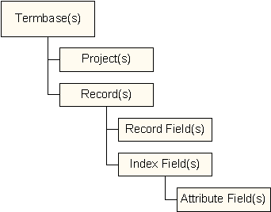

|
Data Structure
|
Previous Top Next |
The data structure used in the Autshumato TMS is described with reference to the following representation:

The following should be kept in mind when working with the Autshumato TMS:
· There can be several Termbases, each of which can contain multiple Records.
· Records cannot be shared by different Termbases.
· Every Termbase can contain a number of Projects and each of the Records in the Termbase can be assigned to a Project.
· The Records for terms that occur under more than one topic can be assigned to multiple Projects.
· A Record must belong to at least one Project.
· Records contain two types of fields: Record Fields and Index Fields.
· A Record Field contains information about the entire Record.
· Each of the Index Fields contains a term in a specified language. The default Index Field is given in English and this term must be specified in order for the Record to be valid.
· Each of the Index Fields can contain a number of Attribute Fields, which give information about the specific term contained in the parent Index Field.